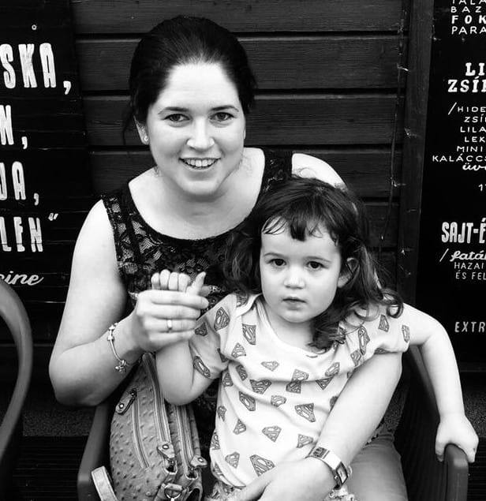

Bemutatkozás

Dr. Purcsi Katalin vagyok szülész-nőgyógyász szakorvos. Békéscsabán születtem, majd ott is nevelkedtem. Gimnáziumi éveimet követően orvosi diplomámat Szegeden szereztem meg. Egyetemi éveim alatt ösztöndíjjal volt lehetőségem Németországban tanulni, majd az egyetem befejezése után 3 évig az Országos Onkológiai Intézet Nőgyógyászati Osztályán dolgoztam, ahol több kutatásban is részt vehettem. Jelenleg a Szent János Kórház Szülészeti-Nőgyógyászati Osztályán dolgozom.
Világ életemben orvos szerettem volna lenni, sosem tudtam magam másként elképzelni. Azon szerencsés emberek közé tartozom, aki elmondhatja magáról, hogy a munkája egyben a hobbija is. Úgy érzem, hogy megtaláltam az összhangot minden területen az életemben, melyhez a férjem és a kislányom megadják a megfelelő hátteret. Igyekszem mindig mindenhol a legjobb teljesítménnyel, és a leglelkiismeretesebben elvégezni a rám bízott feladatokat.
Célom, hogy a hozzám járó betegek őszintén megnyílhassanak a rendelőben.
Fontos számomra az emberközeli szemlélet, a bizalmi légkör megteremtése, éppen ezért minden betegemmel, kismamámmal szinte baráti kapcsolatot alakítok ki. Nincs olyan kérdés, amit ne tehetnének fel és azt vallom, hogy nem csak az orvos-beteg kapcsolatban, de a hétköznapi életben is az egyik legfontosabb a megfelelő kommunikáció.
Főleg operatív meddőségi kivizsgálással, terhesgondozással, valamint alap ultrahang diagnosztikával foglalkozom. Természetes szülés párti vagyok és mivel már saját bőrömön is megtapasztalhattam a vajúdás fájdalmait és szépségeit, így a szülésvezetés során számomra rendkívül fontos, hogy megteremtsem a kismamáknak a nyugodt és kiegyensúlyozott légkört. Hosszú távú céljaim között szerepel a klinikai genetika szakképesítés megszerzése és a legmagasabb szintű és legspeciálisabb ultrahangos diagnosztika elsajátítása.
 A Széll Kálmán tér felöl a Szilágyi Erzsébet fasoron át a Főbejárat előtt elhaladva a Diós árkon felfelé haladva a legelső sorompónál lehet behajtani és rögtön ott jobb oldalon található a Szülészet-Nőgyógyászat épülete.
A Széll Kálmán tér felöl a Szilágyi Erzsébet fasoron át a Főbejárat előtt elhaladva a Diós árkon felfelé haladva a legelső sorompónál lehet behajtani és rögtön ott jobb oldalon található a Szülészet-Nőgyógyászat épülete.
 A Széll Kálmán térről a 61-es, illetve 56-os villamossal 3 megálló, illetve a 128-as, vagy 22A buszokkal 2 megállót kell utazni. A Főbejáraton át balra elindulva felfelé haladva érheti el épületünket.
A Széll Kálmán térről a 61-es, illetve 56-os villamossal 3 megálló, illetve a 128-as, vagy 22A buszokkal 2 megállót kell utazni. A Főbejáraton át balra elindulva felfelé haladva érheti el épületünket.